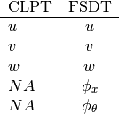
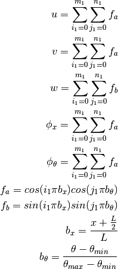
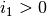
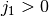
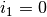
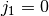

Semi-analytical Models for Panels (compmech.panels)¶
Conical (Konus) Panels (compmech.panels.kpanels)¶
Can be used to simulate cylindrical panels when  . The main
attributes are listed below:
. The main
attributes are listed below:

| Geometric Attributes | Description |
|---|---|
| r1 | Radius at the bottom edge |
| r2 | Radius at the top edge |
| L | Length along the  axis axis |
| tmindeg | Circumferential start angle |
| tmaxdeg | Circumferential end angle |
| alphadeg | Cone semi-vertex angle in degrees |
- class compmech.panels.kpanels.KPanelT¶
Conical (Konus) panel using trigonometric series
The approximation functions for the displacement field are:

with:

Methods
add_SPL(PL[, pt, theta, cte]) Add a Single Perturbation Load 
add_force(x, theta, fx, ftheta, fz[, cte]) Add a punctual force with three components calc_NL_matrices(c[, num_cores]) Calculates the non-linear stiffness matrices calc_fext([inc, silent]) Calculates the external force vector 
calc_fint(c[, m]) Calculates the internal force vector 
calc_k0() calc_kT(c) calc_linear_matrices([combined_load_case]) from_DB(name) Load cone / cylinder data from the local database get_size() Calculates the size of the stiffness matrices lb([tol, combined_load_case, ...]) Performs a linear buckling analysis plot(c[, invert_theta, plot_type, vec, ...]) Contour plot for a Ritz constants vector. save() Save the KPanelT object using cPickle static([NLgeom, silent]) Static analysis for cones and cylinders strain(c[, xs, ts, gridx, gridt]) Calculates the strain field stress(c[, xs, ts, gridx, gridt]) Calculates the stress field uvw(c[, xs, ts, gridx, gridt]) Calculates the displacement field - add_SPL(PL, pt=0.5, theta=0.0, cte=True)¶
Add a Single Perturbation Load
The perturbation load is a particular case of the punctual load which as only the normal component (along the
 axis).
axis).Parameters: PL : float
The perturbation load value.
pt : float, optional
The normalized meridional in which the new SPL will be included.
theta : float, optional
The angular position in radians.
cte : bool, optional
Constant forces are not incremented during the non-linear analysis.
Notes
Each single perturbation load is added to the forces parameter of the KPanelT object if cte=True, or to the forces_inc parameter if cte=False, which may be changed by the analyst at any time.
- add_force(x, theta, fx, ftheta, fz, cte=True)¶
Add a punctual force with three components
Parameters: x : float
The
position.theta : float
The
 position in radians.
position in radians.fx : float
The
component of the force vector.ftheta : float
The
component of the force vector.fz : float
The
component of the force vector.cte : bool, optional
Constant forces are not incremented during the non-linear analysis.
- calc_NL_matrices(c, num_cores=None)¶
Calculates the non-linear stiffness matrices
Parameters: c : np.ndarray
Ritz constants representing the current state to calculate the stiffness matrices.
num_cores : int, optional
Number of CPU cores used by the algorithm.
Notes
Nothing is returned, the calculated matrices
- calc_fext(inc=1.0, silent=False)¶
Calculates the external force vector
Recall that:

such that the terms in
 are constant and the terms in
are constant and the terms in
 will be scaled by the parameter inc.
will be scaled by the parameter inc.Parameters: inc : float, optional
Since this function is called during the non-linear analysis, inc will multiply the terms
.silent : bool, optional
A boolean to tell whether the log messages should be printed.
Returns: fext : np.ndarray
The external force vector
- calc_fint(c, m=1)¶
Calculates the internal force vector
Parameters: c : np.ndarray
The Ritz constants that will be used to compute the internal forces.
m : integer, optional
A multiplier to the number of integration points if one wishes to use more integration points to calculate
than to
calculate ![[K_T]](../../_images/math/6de489b578ca938805144e2400be7e2773da19ab.png) .
.Returns: fint : np.ndarray
The internal force vector.
- from_DB(name)¶
Load cone / cylinder data from the local database
Parameters: name : str
A key contained in the ccs dictionary of module compmech.conecyl.conecylDB.
- get_size()¶
Calculates the size of the stiffness matrices
The size of the stiffness matrices can be interpreted as the number of rows or columns, recalling that this will be the size of the Ritz constants’ vector
 , the internal force vector and
the external force vector .
, the internal force vector and
the external force vector .Returns: size : int
The size of the stiffness matrices.
- lb(tol=0, combined_load_case=None, remove_null_i1_j1=False, sparse_solver=True)¶
Performs a linear buckling analysis
The following parameters of the KPanelT object will affect the linear buckling analysis:
parameter description num_eigenvalues Number of eigenvalues to be extracted num_eigvalues_print Number of eigenvalues to print after the analysis is completed Parameters: combined_load_case : int, optional
It tells whether the linear buckling analysis must be computed considering combined load cases, each value will tell the algorithm to rearrange the linear matrices in a different way. The valid values are 1, or 2, where:
- 1 : find the critical Fx for a fixed Fxt
- 2 : find the critical Fx for a fixed Ft
- 3 : find the critical Ft for a fixed Ftx
- 4 : find the critical Ft for a fixed Fx
remove_null_i1_j1 : bool, optional
It was observed that the eigenvectors can be described using only the homogeneous part of the approximation functions, which are obtained with  and . Therefore, the terms with  and  can be ignored.
sparse_solver : bool, optional
Tells if solver scipy.linalg.eigh() or scipy.sparse.linalg.eigsh() should be used.
Notes
The extracted eigenvalues are stored in the eigvals parameter of the KPanelT object and the
 eigenvector in the
eigvecs[i-1, :] parameter.
eigenvector in the
eigvecs[i-1, :] parameter.
- plot(c, invert_theta=False, plot_type=1, vec='w', deform_u=False, deform_u_sf=100.0, filename='', ax=None, figsize=(3.5, 2.0), save=True, add_title=False, title='', colorbar=False, cbar_nticks=2, cbar_format=None, cbar_title='', cbar_fontsize=10, aspect='equal', clean=True, dpi=400, texts=, []xs=None, ts=None, gridx=300, gridt=300, num_levels=400, vecmin=None, vecmax=None)¶
Contour plot for a Ritz constants vector.
Parameters: c : np.ndarray
The Ritz constants that will be used to compute the field contour.
vec : str, optional
Can be one of the components:
- Displacement: 'u', 'v', 'w', 'phix', 'phit'
- Strain: 'exx', 'ett', 'gxt', 'kxx', 'ktt', 'kxt', 'gtz', 'gxz'
- Stress: 'Nxx', 'Ntt', 'Nxt', 'Mxx', 'Mtt', 'Mxt', 'Qt', 'Qx'
deform_u : bool, optional
If True the contour plot will look deformed.
deform_u_sf : float, optional
The scaling factor used to deform the contour.
invert_theta : bool, optional
Inverts the
axis of the plot. It may be used to match
the coordinate system of the finite element models created
using the desicos.abaqus module.plot_type : int, optional
For cylinders only 4 and 5 are valid. For cones all the following types can be used:
- 1: concave up (with invert_theta=False) (default)
- 2: concave down (with invert_theta=False)
- 3: stretched closed
- 4: stretched opened (
 vs.
vs.  )
) - 5: stretched opened ( vs. )
save : bool, optional
Flag telling whether the contour should be saved to an image file.
dpi : int, optional
Resolution of the saved file in dots per inch.
filename : str, optional
The file name for the generated image file. If no value is given, the
 parameter of the KPanelT object will be used.
parameter of the KPanelT object will be used.ax : AxesSubplot, optional
When ax is given, the contour plot will be created inside it.
figsize : tuple, optional
The figure size given by (width, height).
add_title : bool, optional
If a title should be added to the figure.
title : str, optional
If any string is given add_title will be ignored and the given title added to the contour plot.
colorbar : bool, optional
If a colorbar should be added to the contour plot.
cbar_nticks : int, optional
Number of ticks added to the colorbar.
cbar_format : [ None | format string | Formatter object ], optional
See the matplotlib.pyplot.colorbar documentation.
cbar_fontsize : int, optional
Fontsize of the colorbar labels.
cbar_title : str, optional
Colorbar title. If cbar_title == '' no title is added.
aspect : str, optional
String that will be passed to the AxesSubplot.set_aspect() method.
clean : bool, optional
Clean axes ticks, grids, spines etc.
xs : np.ndarray, optional
The
positions where to calculate the displacement field.
Default is None and the method _default_field is used.ts : np.ndarray, optional
The theta positions where to calculate the displacement field. Default is None and the method _default_field is used.
gridx : int, optional
Number of points along the
axis where to calculate the
displacement field.gridt : int, optional
Number of points along the
 where to calculate the
displacement field.
where to calculate the
displacement field.num_levels : int, optional
Number of contour levels (higher values make the contour smoother).
vecmin : float, optional
Minimum value for the contour scale (useful to compare with other results). If not specified it will be taken from the calculated field.
vecmax : float, optional
Maximum value for the contour scale.
Returns: ax : matplotlib.axes.Axes
The Matplotlib object that can be used to modify the current plot if needed.
- save()¶
Save the KPanelT object using cPickle
Notes
The pickled file will have the name stored in KPanelT.name followed by a '.KPanelT' extension.
- static(NLgeom=False, silent=False)¶
Static analysis for cones and cylinders
The analysis can be linear or geometrically non-linear. See Analysis for further details about the parameters controlling the non-linear analysis.
Parameters: NLgeom : bool
Flag to indicate whether a linear or a non-linear analysis is to be performed.
silent : bool, optional
A boolean to tell whether the log messages should be printed.
Returns: cs : list
A list containing the Ritz constants for each load increment of the static analysis. The list will have only one entry in case of a linear analysis.
Notes
The returned cs is stored in self.analysis.cs. The actual increments used in the non-linear analysis are stored in the self.analysis.increments parameter.
- strain(c, xs=None, ts=None, gridx=300, gridt=300)¶
Calculates the strain field
Parameters: c : np.ndarray
The Ritz constants vector to be used for the strain field calculation.
xs : np.ndarray, optional
The
coordinates where to calculate the strains.ts : np.ndarray, optional
The
coordinates where to calculate the strains, must
have the same shape as xs.gridx : int, optional
When xs and ts are not supplied, gridx and gridt are used.
gridt : int, optional
When xs and ts are not supplied, gridx and gridt are used.
- stress(c, xs=None, ts=None, gridx=300, gridt=300)¶
Calculates the stress field
Parameters: c : np.ndarray
The Ritz constants vector to be used for the strain field calculation.
xs : np.ndarray, optional
The
coordinates where to calculate the strains.ts : np.ndarray, optional
The
coordinates where to calculate the strains, must
have the same shape as xs.gridx : int, optional
When xs and ts are not supplied, gridx and gridt are used.
gridt : int, optional
When xs and ts are not supplied, gridx and gridt are used.
- uvw(c, xs=None, ts=None, gridx=300, gridt=300)¶
Calculates the displacement field
For a given full set of Ritz constants c, the displacement field is calculated and stored in the parameters u, v, w, phix, phit of the KPanelT object.
Parameters: c : float
The full set of Ritz constants
xs : np.ndarray
The
positions where to calculate the displacement field.
Default is None and the method _default_field is used.ts : np.ndarray
The theta positions where to calculate the displacement field. Default is None and the method _default_field is used.
gridx : int
Number of points along the
axis where to calculate the
displacement field.gridt : int
Number of points along the
where to calculate the
displacement field.Returns: out : tuple
A tuple of np.ndarrays containing (u, v, w, phix, phit).
Notes
The returned values u`, v, w, phix, phit are stored as parameters with the same name in the KPanelT object.